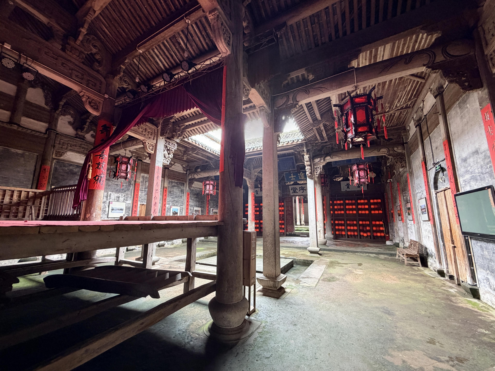

有序堂
广庭深院 · 礼乐相闻
打卡任务
进行中走进有序堂，寻访古戏台与匾额间的宗族记忆。完成现场打卡，解锁专属印章与奖励。
已完成 0 / 8 处
景点简介
查看详情有序堂是玉华叶氏总祠，也是新叶村规模最大的宗祠之一。院落、古戏台与匾额，共同承载着村落的宗族记忆。

广庭深院 · 礼乐相闻
走进有序堂，寻访古戏台与匾额间的宗族记忆。完成现场打卡，解锁专属印章与奖励。
有序堂是玉华叶氏总祠，也是新叶村规模最大的宗祠之一。院落、古戏台与匾额，共同承载着村落的宗族记忆。